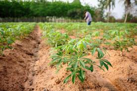

O Cultivo da Mandioca
A mandioca é uma cultura de grande importância econômica e social, especialmente em regiões tropicais e subtropicais. Para um cultivo eficiente, o solo deve ser preferencialmente leve, bem drenado, com boa aeração e baixa compactação, evitando encharcamentos que prejudicam o desenvolvimento das raízes. O pH ideal do solo varia entre 5,5 e 6,5, e a correção da acidez com calcário agrícola é essencial para otimizar a absorção de nutrientes.
O plantio é realizado por meio de manivas (segmentos do caule) que são colocadas em sulcos ou covas com cerca de 10 a 15 cm de profundidade, respeitando o espaçamento adequado entre plantas (geralmente entre 0,8 e 1 metro) para favorecer o crescimento e facilitar os tratos culturais. A época ideal para o plantio depende da região, mas geralmente coincide com o início do período chuvoso para garantir boa disponibilidade hídrica.
A adubação deve ser feita de acordo com a análise do solo, priorizando a reposição de fósforo, potássio e micronutrientes, além da aplicação de calcário para corrigir a acidez. O uso de fertilizantes orgânicos também é recomendado para melhorar a fertilidade e a estrutura do solo.
Durante o ciclo da cultura, que dura cerca de 8 a 12 meses, é fundamental realizar o controle de plantas daninhas, pragas e doenças. A irrigação, quando necessária, deve ser feita de forma moderada para evitar o encharcamento e garantir um desenvolvimento saudável das raízes. Monitoramento constante da lavoura permite identificar problemas e agir rapidamente, aumentando a produtividade e a qualidade da mandioca.